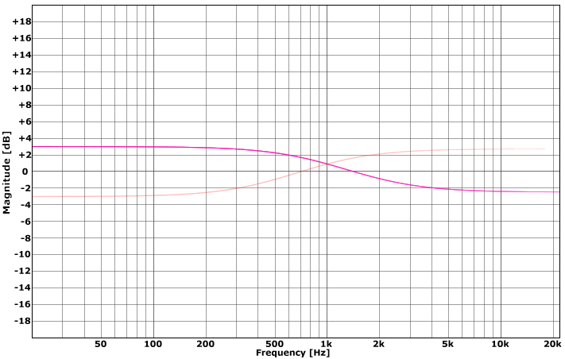

Equalisers¶
Equaliser¶
A four-band parametric equaliser with switchable low- and high-shelf bands.
Each band provides the following controls:
Freq - set the centre frequency for the band in Hz.
Q - set the band ‘quality’ from 0 to 100%. Lower settings result in wider bands, while raising the value narrows the width of the boost or cut applied.
Gain - set the amount of cut or boost applied from -12 dB to +12 dB.
The four bands cover the following frequency ranges:
HF - 1500 Hz to 20 kHz
HMF - 400 Hz to 8 kHz
LMF - 150 Hz to 2 kHz
LF - 20 Hz to 600 Hz
The Low Cut highpass filter covers a frequency range of 10 Hz to 1500 Hz. Set it to 0 to deactivate the filter and remove it from the processing chain.
By default each band uses a ‘bell’ or ‘peak’ type equalisation curve. The LF and HF bands can be switched to use a shelf type response instead; use the Shelf switches associated with each band to achieve this.
The input trim control allows the input signal gain to be boosted or cut by up to 20 dB.
The following plots show the frequency-response curves for the LF and LMF bands with varying amounts of gain and Q. In all cases the plots show the responses at the default frequencies for the band, with the darkest line in each plot showing the lowest setting for the parameter being varied.
The LF shelf band features the following response from -12 to +12 dB with no Q applied:
The LMF shelf band features the following response from -12 to +12 dB with no Q applied:
Note how the boost/cut shape is asymmetric with a broader boost curve and a more focused cut response.
The LF shelf band features the following response at +12 dB with Q applied in 20% steps from 0 to 100%:
and at -12 dB with Q applied in 20% steps from 0 to 100%:
Note how the boost response dips below 0 dB and the cut response rises above it as the Q is increased.
The LMF band at -12 dB and +12 dB over the same Q range:
The plots shown here are typical of the shelf and bell curves provided by all the bands. The bands not illustrated show similar responses within their respective frequency ranges, except for the HF shelf response which is a mirror image of the LF shelf curve.
DJEQ¶
A three-band ‘DJ-style’ equaliser.
The following controls are provided:
Input - adjust the input level from -20 dB to +20 dB.
Gain: Low/Mid/High - set the boost or cut applied to each of the bands from -inf up to 6 dB.
Low Freq - set the low/mid band crossover frequency from 50 Hz to 5 kHz.
High Freq - set the mid/high band crossover frequency from 200 Hz to 18 kHz.
Kill: Low/Mid/High - deactivate or ‘kill’ each of the bands, removing the range of frequencies from the output.
The DJEQ provides three bands of equalisation split between the low and high frequency values. Each band can be boosted by up to 6 dB or cut all the way down to -inf, while a kill switch for each band allows it to be silenced instantly.
Rather than the ‘bell’ or ‘shelf’ curves provided by the Equaliser plugin, the DJEQ provides a ‘flat’ response between the crossover points defined by the two frequency settings.
The following example curve shows the response with crossover frequencies of 100 Hz and 5 kHz where the bands have been set to +6 dB, -4 dB and +3 dB respectively.
Activating the mid-band kill switch gives this response:
TiltEQ¶
A tilt-equaliser for adjusting high/low frequency balance.
The following controls are provided:
Input - adjust the input level from -20 dB to +20 dB.
Freq - set the centre point of the tilt response from 500 Hz to 2.5 kHz.
Gain - set the amount of boost or cut applied to the low band from -12 dB to +12 dB.
TiltEQ divides the frequency spectrum into two regions one above the frequency ‘pivot’ point and one below. With the gain set to 0 dB the response is neutral and the signal is passed unchanged. Raising the gain boosts the lower region while lowering the upper creating a ‘tilting’ frequency response. Conversely, lowering the gain causes the pivot to occur in the opposite direction, with the upper region being boosted and the lower region cut.
With the frequency set to 1 kHz the response from a +3 dB boost and a -3 dB cut is as follows:
